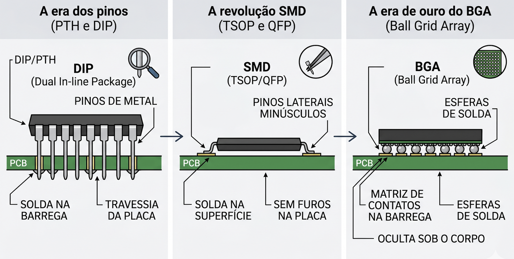

2. Evolução: do pino à esfera
O operador precisa identificar instantaneamente a "idade" da tecnologia ao bater o olho em uma placa. A evolução do design dita a complexidade da extração e o fluxo de destino do material:
A era dos pinos (PTH e DIP): Chips com pernas de metal que atravessam a placa. Para a nossa operação, essas peças geralmente seguem direto para a via do refino e recuperação de metais, não justificando a extração individual.
A revolução SMD (TSOP e QFP): Chips soldados na superfície com pinos minúsculos nas laterais. Muito comuns em NANDs de pendrives antigos e BIOS. Embora fáceis de extrair, a demanda para reacondicionamento é decrescente.
A era de ouro do BGA (Ball Grid Array): Este é o nosso foco principal. Os pinos foram substituídos por esferas de solda na parte inferior. Essa tecnologia permitiu a criação de chips híbridos como o uMCP e o eMCP, que empilham armazenamento e RAM no mesmo corpo.
O desafio do underfill: Chips modernos de smartphones são frequentemente "colados" com uma resina rígida chamada Underfill. Reconhecer essa resina visualmente antes da extração é uma habilidade vital para evitar a destruição do componente durante o processo térmico.

Figura 2: Saltos tecnológicos de encapsulamento.
1.1 Metodologia de identificação
- Leia o Part Number (PN). Todo chip tem seu código gravado a laser ou silk-screen na superfície superior. Este é o ponto de partida absoluto para qualquer triagem na esteira.
- Identifique o prefixo. Os primeiros caracteres (geralmente de 2 a 5 letras) determinam o fabricante e a família principal do componente. A agilidade visual do operador depende de memorizar os prefixos listados nesta documentação.
- Decodifique por posição. Cada segmento ou caractere subsequente do código carrega um dado técnico exato: capacidade de armazenamento, geração da tecnologia, velocidade (speed grade), tolerância de temperatura e o formato do encapsulamento.
- Confirme pelo package físico ("teste da barriga"). A análise visual e o padrão das conexões validam a leitura do código. A contagem e o desenho das esferas BGA são provas físicas reais. Exemplo: matrizes com 153 ou 169 esferas são características clássicas de eMMC; padrões menores ou designs retangulares finos (FBGA) geralmente indicam chips dedicados de LPDDR ou UFS.
- Utilize hardware de leitura como último recurso. Se o PN estiver raspado, apagado por atrito térmico ou ilegível devido a resíduos, o componente não deve ser descartado de imediato. A peça deve ser separada para leitura direta via programadores de bancada (como RT809H, TNM5000, EasyJTAG ou UFI). Nesse processo, o próprio controlador interno do chip reporta sua identidade real (dados de CID/CSD).